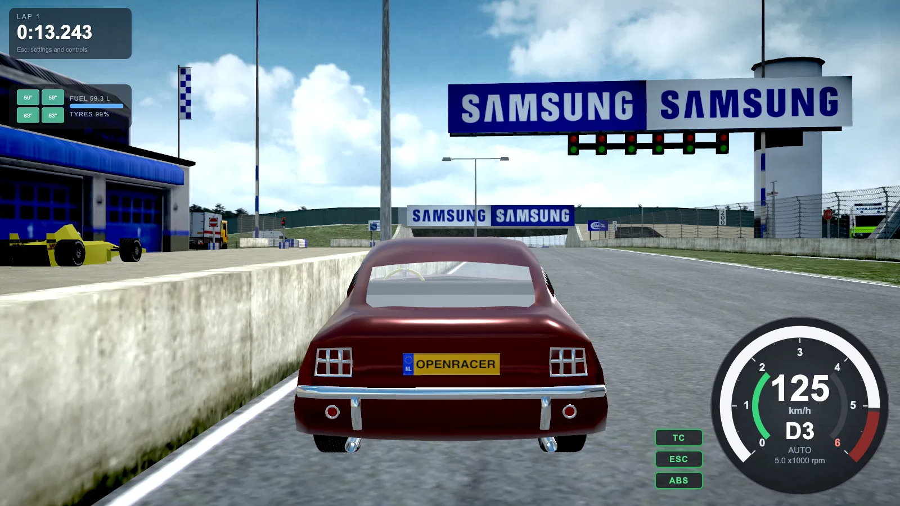
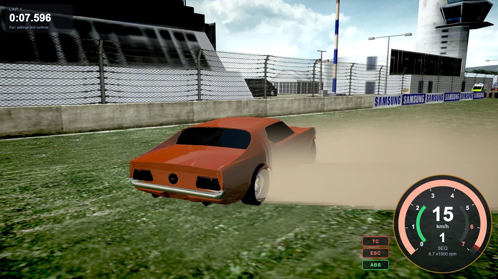
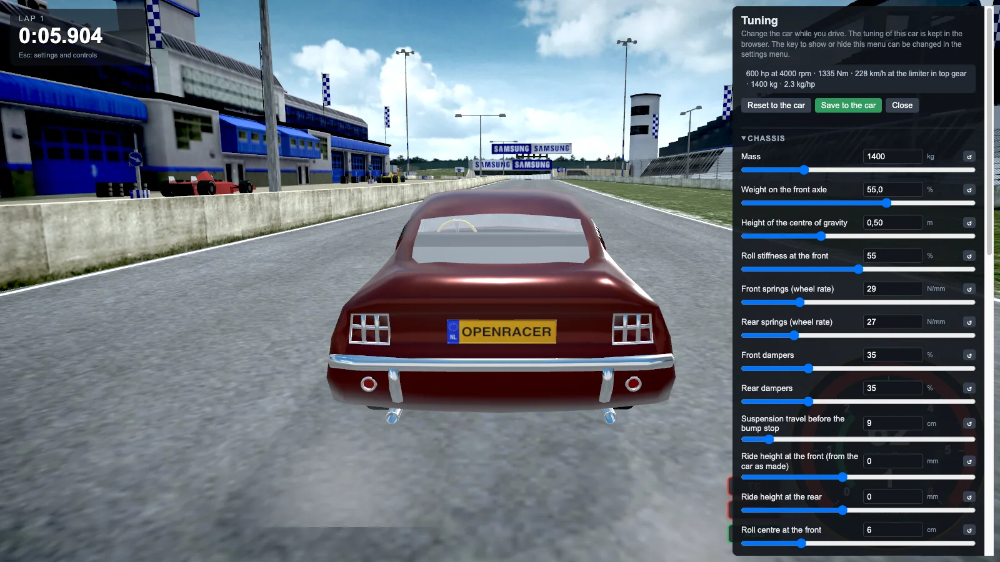
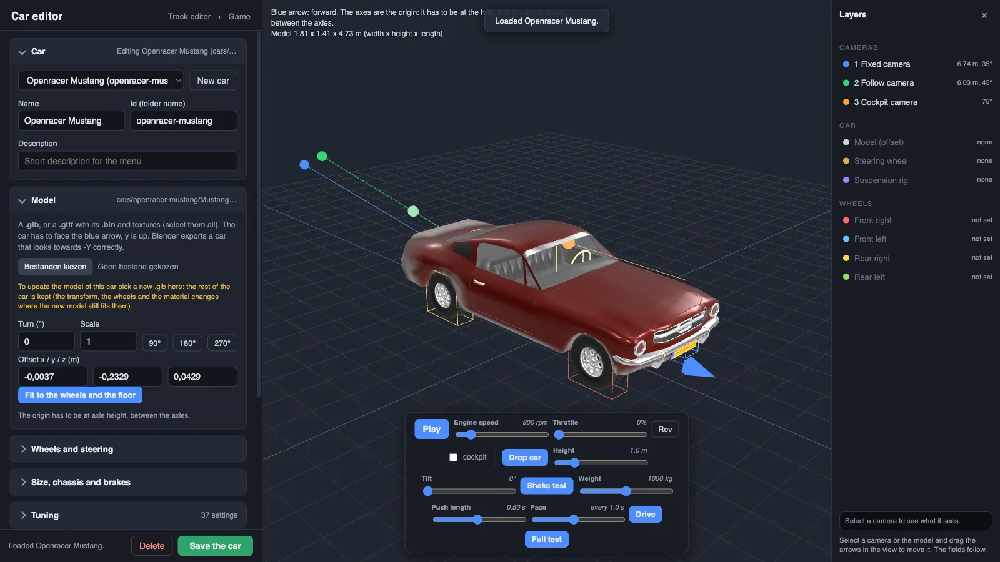
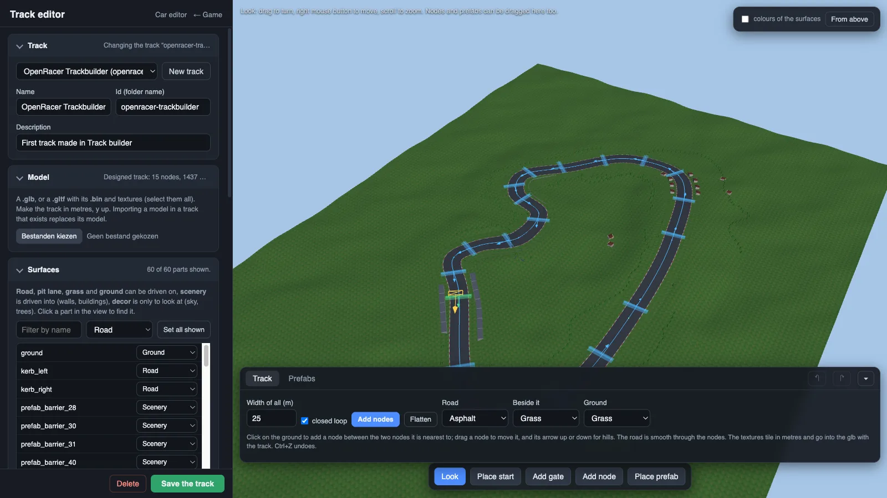

A racing simulator
that lives in a tab.
OpenRacer simulates the whole car: a body on springs, four tyres that heat up and wear out, a clutch, a gearbox and differentials. You can drive it with the keyboard, a gamepad or a racing wheel with force feedback, race against AI cars, and build your own cars and tracks.


About the project
OpenRacer started as an open-source initiative by Chris Barnard to build a high-quality racing simulation that runs in the browser. This site is about a fork of it, in which the driving model, the racing and the tools have been taken a long way further. The game needs no installation: it is a static web app that uses WebGL, so any recent browser will do.
A car, not a sprite
A rigid body with a quarter-car suspension at every corner, a combined-slip tyre model with load, pressure, camber, toe, heat and wear, and a driveline with clutch, gearbox and differentials.
Races with a result
Standing starts with a countdown, laps, AI opponents on a racing line, a ghost of your best lap, lap records, fuel, tyre wear and pit stops.
Keyboard to racing wheel
Every action can have a key, a gamepad button and a wheel input at once. Wheels with force feedback work through WebHID, with the torque worked out from the physics.
Make your own
A car editor with a live test bench, a track editor that can also draw a track from nothing, and a tuning menu that changes everything while you drive.
Calculated engine sound
The sound comes from the gas in the cylinders and the exhaust, a port of parts of engine-sim to an AudioWorklet, not from a loop.
Yours stays yours
Cars and tracks you make or import live in your own browser or in a folder on your PC. Nothing is uploaded to the server.
In the game
All of these are screenshots of the game itself, taken in the browser.








The original and the fork
Both are on GitHub and both are GPLv3. The original is the project that Chris Barnard began. The fork is where the work shown on this site has been done.
digi-chris/OpenRacer
The open-source racing simulation by Chris Barnard (digi-chris), with the demo Mustang and its first track.
github.com/digi-chris/OpenRacer The forkWeArtStudioNL/openracer-agent-port
The fork with the new physics, racing, editors, wheel support, garage and the rest of what the docs describe.
github.com/WeArtStudioNL/openracer-agent-portWhat the fork adds
Vehicle physics
Quarter-car suspension, Ackermann, aero per axle, roll centres, camber, toe, tyre pressure, a combined-slip tyre, turbo, ESC and traction control. A bench runs the road tests of every car.
Race format
Laps, a 3-2-1 start, results, AI difficulty levels, ghost laps, records, fuel, tyre temperature and wear, pit lane stops.
Input
Steering that slows with speed on keyboard and gamepad, a gamepad steering assist, racing wheels with calibration, an H-pattern shifter and force feedback.
Car editor
Import a glb, find the wheels, set cameras and materials, tune everything, and test it on a bench with a drop, a shake and a full test.
Track editor
Import a model or draw a loop of nodes, add tileable textures and prefabs, place gates, set the sky and sun, and record the AI racing line.
Suspension rig
Name the parts of a model (wishbones, springs, tie rods, a live axle) and they move with the real suspension and steering.
Skidpad
A round pad that drives your car round by itself until it lets go and tells you the g it held.
Local garage
The game ships a standard set. Players keep their own cars and tracks in the browser or in a folder, and pass them on as zip files.
Built with Claude
The fork was developed together with AI. The code, the physics, the editors and the documentation of the fork were written in conversation with these Claude models from Anthropic:
The work was done in Claude Code, step by step: an idea, a change, a test in the browser or in the physics bench, and a commit. Glenn Hofman set the direction, drove the result and decided what was good, and the models wrote and tested most of the code. The original project and its first code are the work of Chris Barnard.
Run it yourself
The game here is hosted as plain files. To make cars and tracks with the editors on your own machine, run the small helper server from a checkout of the fork:
git clone https://github.com/WeArtStudioNL/openracer-agent-port.git
cd openracer-agent-port
./start-server.sh # opens http://localhost:8000More in the docs.